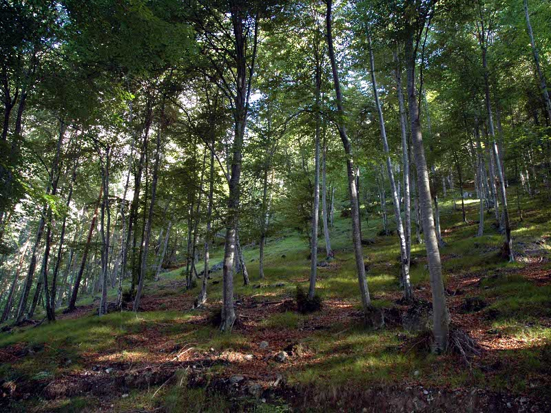
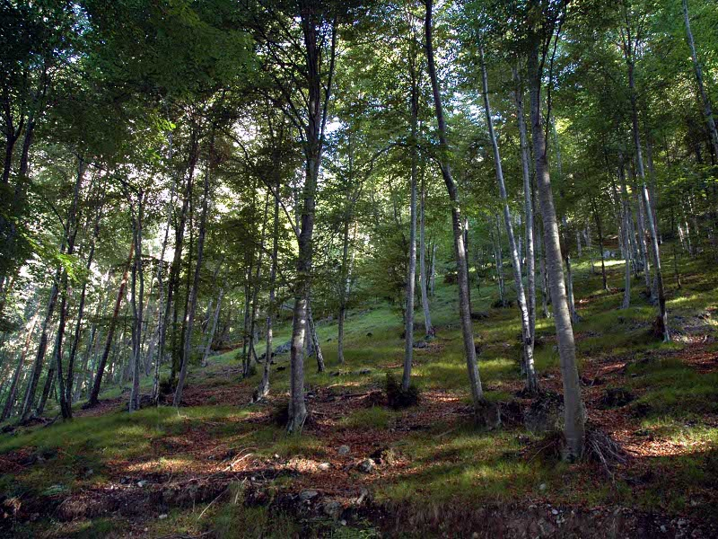
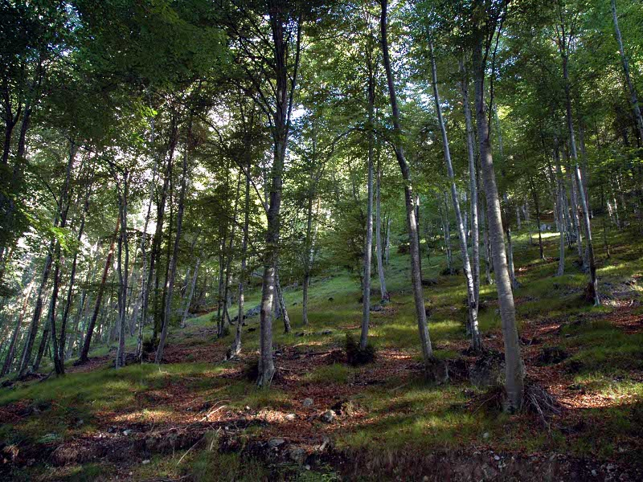

Fino a 1800 m o 2.200 m la vegetazione è formata principalmente da boschi di conifere (abete rosso, abete bianco, pino silvestre e larice), mentre nelle alte quote da boschi di larice, cirmolo e cespuglietti di mughi. Al di sotto dei 1200-1000 metri troviamo boschi di latifoglie: faggio, quercia , betulla, nocciòlo, castagno, frassino, acero di monte. Innumerevoli sono anche le tipologie di fiori presenti nella catena montuosa dolomitica, ma sicuramente il più famoso è la stella alpina, originaria delgi altopiani aridi dell'Asia centrale

Nelle Dolomiti vivono numerose specie di mammiferi e roditori: il capriolo, il cervo, il camoscio, lo stambecco, il cinghiale, la marmotta, lo scoiattolo, il tasso, la donnola, la faina, la talpa, la volpe, la lepre, il ghiro, il riccio, il gallo cedrone o urogallo, una specie presente in Italia solo nella valle dolomitica. Molto rara è la lontra, ritornata in questi ultimi anni (Alto Adige e Carnia). In alcune zone vivono l'orso bruno, la lince e il lupo. Negli ultimi anni in alcune zone (tra Friuli e Trentino-Alto Adige) è stata accertata la presenza dello sciacallo dorato proveniente dalla penisola balcanica.